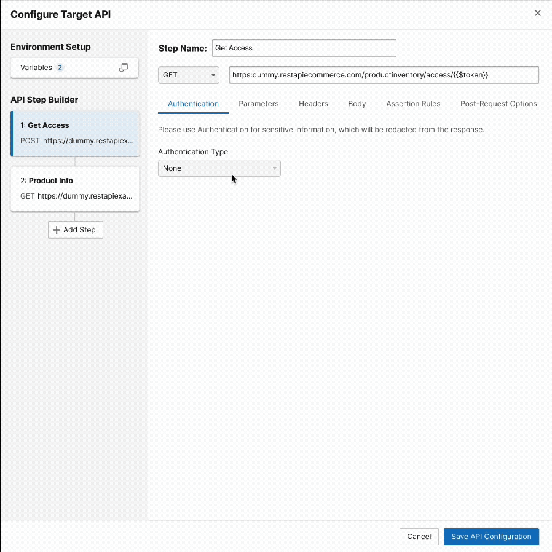
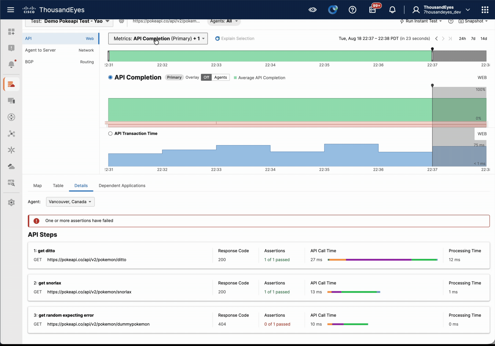

Overview
I led the design and launch of ThousandEyes' first dedicated API testing experience, a foundational product capability that expanded the platform's observability model to capture synthetic API performance from distributed global network locations.
This initiative addressed a critical market gap: enterprises lacked visibility into API health and performance dependencies critical to digital service delivery. The solution needed to accommodate both simple endpoint validation and complex multi-step API workflows while scaling seamlessly across thousands of agent locations.
Working within a phased release strategy, I designed the complete foundation for single-step API tests and architected an extensible configuration model and results framework capable of supporting sophisticated multi-step testing patterns—eliminating downstream rework and accelerating time-to-value for customers.
Strategic Impact
The API testing feature represented a fundamental expansion of ThousandEyes' addressable market, enabling the platform to move from network and application performance into API-first observability. This capability directly supported the company's strategic shift toward comprehensive digital experience monitoring.
Key business outcomes:
- Market differentiation — First-to-market synthetic API testing capability with native multi-step workflow support in the enterprise observability space
- Enterprise adoption — Opened doors with API-first enterprises and microservices-heavy organizations previously outside our addressable market
- Foundation for growth — Designed extensible information architecture enabling rapid feature expansion without rearchitecting core user workflows
- Integration velocity — Partnered with engineering to align UX patterns with execution model, reducing implementation risk and accelerating launch timeline
Design Approach
As sole designer, I owned the complete experience strategy across configuration, execution, and diagnostics:
- Configuration Flow & Information Architecture — Structured the setup experience to accommodate both immediate use cases (simple API availability checks) and future sophistication (multi-step workflows with request chaining and dynamic assertions). Employed progressive disclosure to reduce cognitive load while preserving power-user workflows.
- API-Specific Inputs Design — Abstracted HTTP complexity into intuitive controls for method, endpoint, headers, authentication, body, and assertions. Validated patterns through iterative testing with API teams and DevOps engineers.
- Results Visualization — Designed views balancing three critical diagnostic modes: performance trending, availability health, and failure investigation. Applied hierarchical filtering to enable quick triage and deep-dive analysis without requiring interface mode switching.
- Extensibility Architecture — Built primitives for multi-step API chaining, variable passing, and conditional assertions—ensuring the initial launch didn't constrain future product roadmap.
- Customer Validation — Conducted iterative testing with API platform teams and SRE organizations, validating design patterns against real-world complexity and gathering feedback on mental models and workflow efficiency.
Outcomes
Multi-Step API Configuration — Extensible setup flow accommodating single and chained API requests with dynamic variable passing and assertion models

API Test Results — Hierarchical results experience supporting trending analysis, failure investigation, and performance diagnostics across distributed locations

Launch Impact: The API testing feature shipped with 98% feature parity to the initial design specification, establishing ThousandEyes as the leading synthetic API monitoring platform for enterprise observability. The extensible architecture facilitated rapid iteration on advanced workflows, setting the foundation for the platform's next phase of growth.